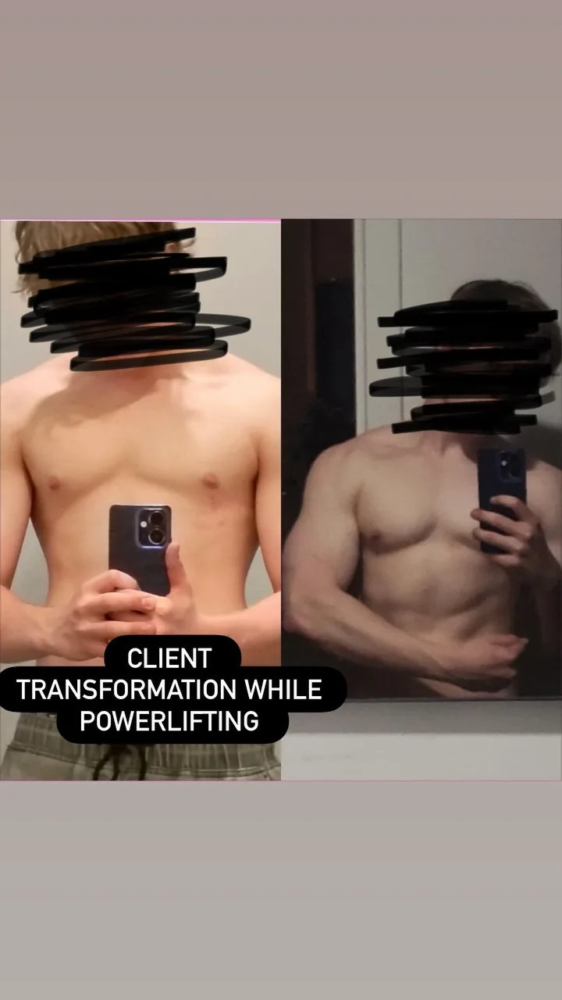

For lifters who want to build muscle and add serious kilos to their total, not just one or the other. If you train consistently and want a real plan instead of a quick fix, this is for you.
Free 30 minute call. No pressure, no obligation.
Here is what clients have done. You can do the same.

Free 30 minute call. No pressure, no obligation.